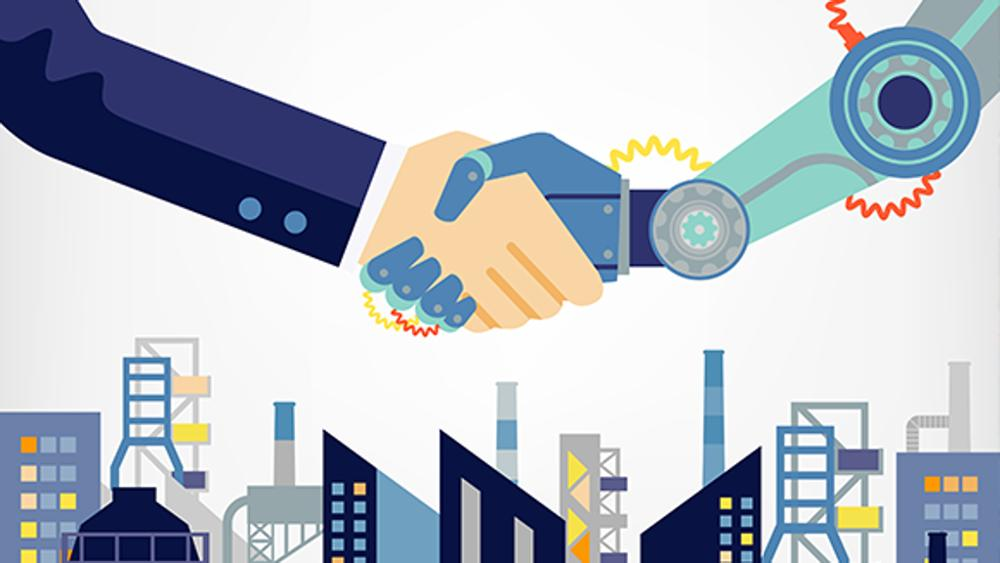
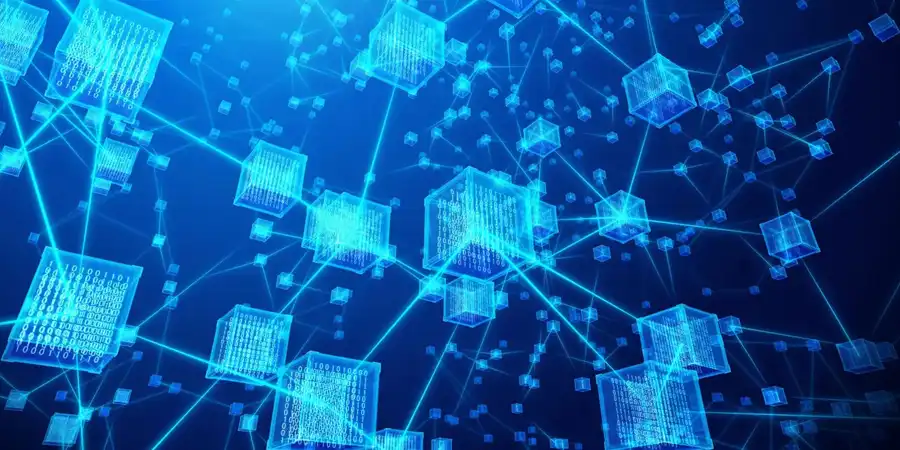
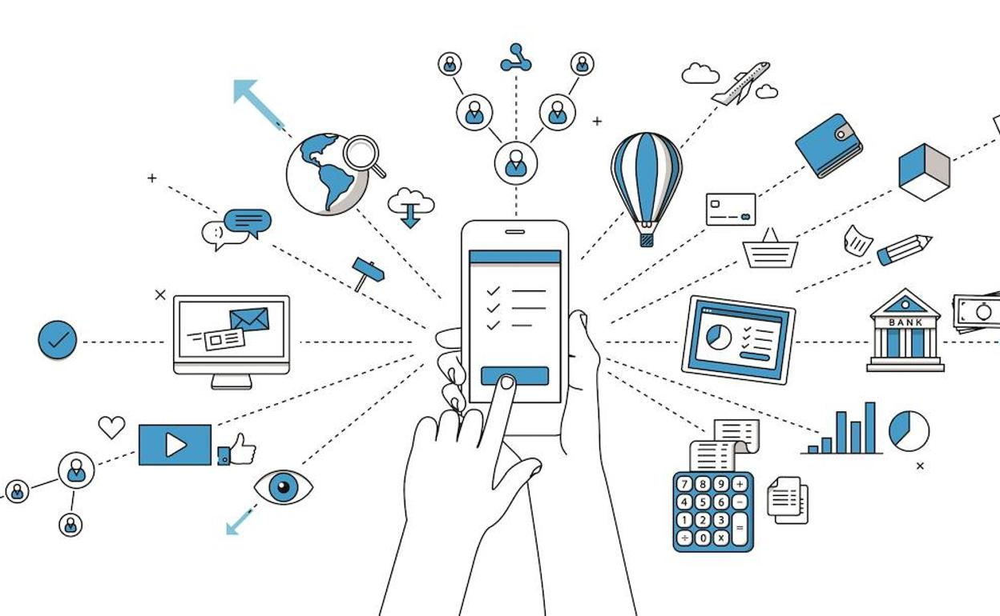

En la actualidad, vivimos en una era de transformación constante impulsada por avances tecnológicos
sin precedentes. La llamada Cuarta Revolución Industrial ha dado paso a un ecosistema digital donde
tecnologías emergentes como la Inteligencia Artificial, el Blockchain, el Internet de las Cosas y
la Realidad Virtual y Aumentada están redefiniendo la forma en que vivimos, trabajamos y nos
relacionamos. Estas innovaciones no solo están modificando los procesos industriales y los modelos
de negocio, sino también influyendo en aspectos sociales, educativos y económicos. Conocer el
funcionamiento y el impacto de estas herramientas es fundamental para comprender el presente y prepararse
para el futuro de una sociedad cada vez más digitalizada e interconectada.
La Cuarta Revolución Industrial (Industria 4.0)

La Industria 4.0, acuñada por Klaus Schwab en 2016, describe la fusión de sistemas físicos, digitales
y biológicos para crear fábricas inteligentes y conectadas globalmente. No se trata únicamente de robots
o IoT, sino también de tecnologías genéticas, nanotecnología, energías renovables y computación
cuántica.
Se distingue por su velocidad sin precedentes, alcance global y alto impacto en lo social y económico,
prometiendo eficiencia, personalización de productos, seguridad laboral y mejoras en la toma de
decisiones.
Al mismo tiempo, plantea desafíos como la brecha digital, riesgos de ciberseguridad, automatización del
empleo y la necesidad de adaptación profesional.
Inteligencia Artificial (IA)
La Inteligencia Artificial es una pieza clave en la automatización y optimización industrial. Integrada
con Big Data y Machine Learning, permite que los sistemas aprendan, analicen y tomen decisiones sin
intervención humana. En entornos industriales, la IA impulsa la hiperautomatización, la robótica
avanzada,
y los llamados cobots (robots colaborativos), eficientando procesos, reduciendo tiempos de parada y
errores,
además de trabajar junto a operarios humanos con seguridad y adaptabilidad.
Blockchain

El blockchain es una base de datos distribuida e inmutable que permite registrar transacciones de forma
segura. Aunque es famoso por las criptomonedas, su aplicación va más allá: en la industria proporciona
trazabilidad, confianza, transparencia y automatización a través de smart contracts. En el sector
financiero,
se utiliza para pagos seguros, gestión de identidad y reducción de burocracia. Además, al combinarse con
IoT
e Industrial IoT (IIoT), configura el concepto de Blockchain of Things, fortaleciendo la integridad y
seguridad de datos entre dispositivos conectados.
Internet de las Cosas (IoT)

El Internet de las Cosas interconecta sensores y dispositivos —desde electrodomésticos hasta maquinaria
industrial— para recolectar datos y automatizar acciones. En su vertiente industrial (IIoT), se conecta
con sistemas cloud/edge y gemelos digitales, optimizando la producción, logística, mantenimiento
predictivo
y seguridad de trabajadores. Los desafíos incluyen la privacidad, interoperabilidad, escalabilidad y
seguridad, donde el Blockchain y la IA juegan un papel clave para fortalecer la confianza.
Realidad Virtual (RV) y Realidad Aumentada (RA)
RV y RA superponen información digital al mundo real o crean entornos virtuales inmersivos. En la
Industria
4.0, son herramientas esenciales para capacitación, mantenimiento, asistencia remota y simulación.
Aliadas
con gemelos digitales y sensores IoT, permiten anticipar fallos, reducir errores, mejorar la seguridad y
optimizar procesos sin interrumpir operaciones reales.
Todas estas tecnologías —Industria 4.0, IA, Blockchain, IoT, RV y RA— se combinan en ecosistemas
hiperconectados
donde la automatización, la toma de decisiones inteligente, la fiabilidad de datos y la experiencia
inmersiva
conviven para transformar industrias y modelos de negocio. Este nuevo paradigma presenta grandes
oportunidades
en eficiencia, seguridad y personalización, pero también exige habilidades digitales, ciberseguridad
avanzada
y políticas para reducir la brecha digital a nivel global.
 La Inteligencia Artificial es una pieza clave en la automatización y optimización industrial. Integrada
con Big Data y Machine Learning, permite que los sistemas aprendan, analicen y tomen decisiones sin
intervención humana. En entornos industriales, la IA impulsa la hiperautomatización, la robótica
avanzada,
y los llamados cobots (robots colaborativos), eficientando procesos, reduciendo tiempos de parada y
errores,
además de trabajar junto a operarios humanos con seguridad y adaptabilidad.
La Inteligencia Artificial es una pieza clave en la automatización y optimización industrial. Integrada
con Big Data y Machine Learning, permite que los sistemas aprendan, analicen y tomen decisiones sin
intervención humana. En entornos industriales, la IA impulsa la hiperautomatización, la robótica
avanzada,
y los llamados cobots (robots colaborativos), eficientando procesos, reduciendo tiempos de parada y
errores,
además de trabajar junto a operarios humanos con seguridad y adaptabilidad.